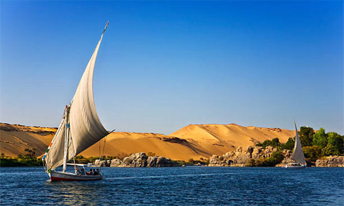
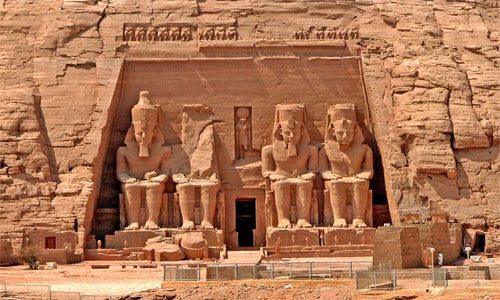

Some experiences you can do in Egypt
Jet Boating on River Nile
It’s the longest river in the world and is the central focus of many myths and legends, which is why spending your time on the Nile River is a must. You’ll get to travel the river in the same way the people of Egypt did so long ago on an open-decked boat called a felucca. These boats offer canvas shelters to provide sun shade and cushions to lie back, relax and enjoy the views along the river. Trips are typically multi-day so passengers sleep under the open skies. While these boats aren’t luxury yacht calibre, the experience of sleeping under the stars on the River Nile is an incredible experience.
Visit Abu Simbel
The Abu Simbel Temples were originally carved into solid rock cliffs but were moved in the 1960s.